Institut Supérieur des Sciences Appliquées et de Technologie de Sousse
| Titre du projet | DrawTopia — jeu de dessin multijoueur |
|---|---|
| Étudiant / groupe | Mohamed Ali Chouikh — ING-A3-04 |
| Technologie et plateforme | React Native (Expo SDK 58, TypeScript) — Android et iOS · serveur Node.js + Socket.IO |
| Date / référence de validation | [à compléter : date et référence de l'accord « VALIDÉ »] |
| Version finale | 1.0 — dépôt github.com/DalyChouikh/drawtopia, branche main |
Bénéficiaires et besoin. Des amis qui veulent jouer ensemble à un jeu créatif, à distance ou dans la même pièce. Les jeux « dessiner et deviner » et « téléphone dessiné » existent séparément ; DrawTopia réunit les deux dans une même application, avec des salons publics ou privés et un simple pseudonyme (pas de compte).
Objectifs mesurables. (1) une partie à 3 joueurs se joue de bout en bout sur téléphone ; (2) un dessin apparaît chez les autres joueurs en moins de 150 ms sur le même réseau (mesuré : ≈ 91 ms via le serveur en ligne à Francfort) ; (3) une faute de frappe proche du mot est signalée « close » ; (4) profil et historique survivent à la fermeture de l'application ; (5) au moins 6 tests documentés dont 2 négatifs (ici 6 scénarios + 84 tests automatiques).
| Fonction | Règle métier (entrée → traitement → résultat) | Statut |
|---|---|---|
| Action 1 — Créer un salon public/privé ou en rejoindre un | Pseudo + réglages → le serveur génère un code libre de 4 caractères (sans 0/O/1/I), vérifie salon existant, non démarré, < 8 joueurs, pseudo unique (sans tenir compte de la casse) → lobby partagé en direct. | Réalisé |
| Action 2 — Choisir le mode et la durée des tours | Mode (Draw & Guess / Draw & Pass), 30/60/90 s, 1–5 tours → seul l'hôte peut modifier ; démarrage refusé sous 3 joueurs connectés → tous les écrans passent au jeu. | Réalisé |
| Action 3 — Dessiner, deviner ou écrire | Dessin → traits normalisés (0..1), simplifiés, relayés. Proposition → normalisation, distance d'édition bornée → correct (points selon la vitesse), close (annonce) ou wrong. Draw & Pass : le joueur i travaille sur la chaîne (i + étape) mod N. | Réalisé |
| Action 4 — Consulter scores / chaînes | Fin de partie → classement avec ex æquo (1, 1, 3) ou révélation animée des chaînes → enregistré dans l'historique du téléphone (20 parties max), consultable hors ligne, supprimable. | Réalisé |
Demandé / réalisé / non réalisé. Tout le périmètre de la fiche est réalisé. Ajouts : historique local, indices de lettres, reconnexion automatique, serveur déployé (Render). Non réalisé : transmission du dessin point par point (le trait est envoyé quand le doigt se lève) ; application installable sur l'App Store (test via Expo Go).
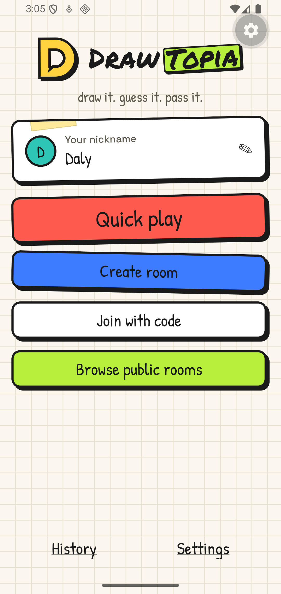
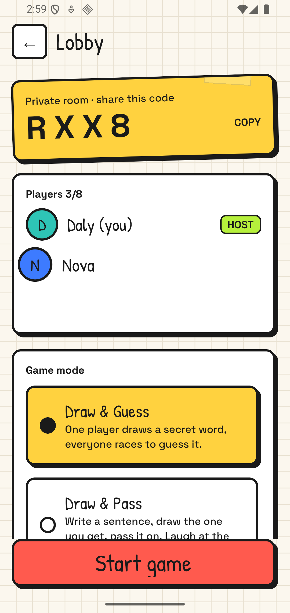
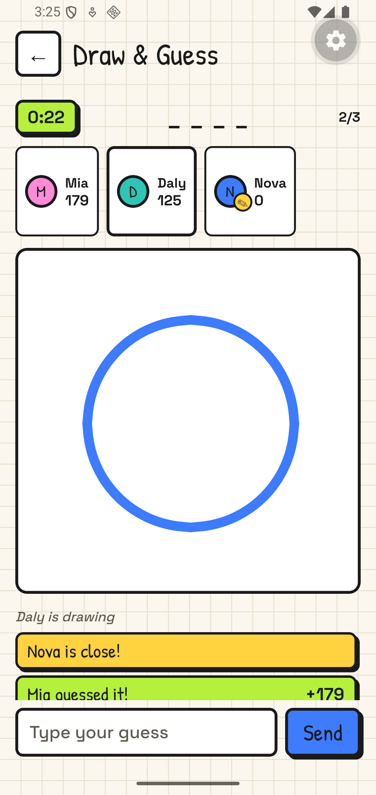
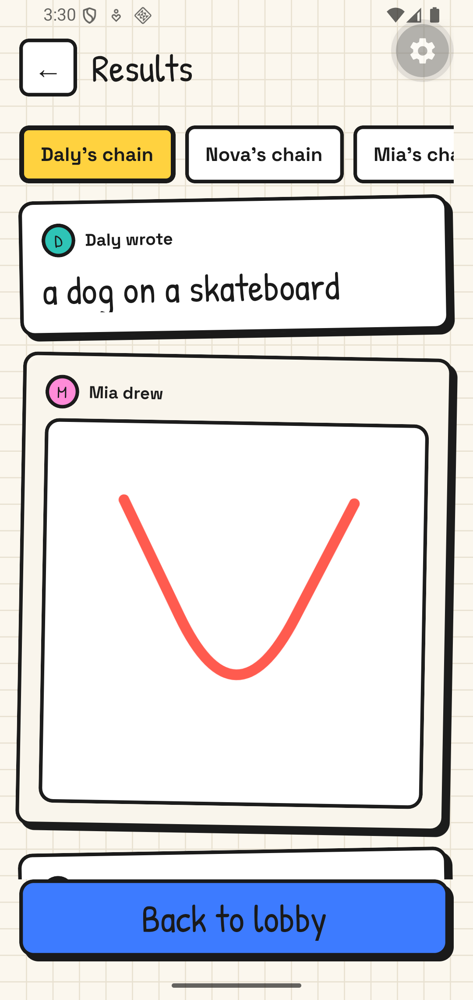
Le dépôt est un monorepo npm workspaces en trois parties : app/ (client Expo),
server/ (serveur Socket.IO) et shared/ (types, validations et règles du jeu importés par
les deux). Le serveur fait autorité : il garde les salons, le mot secret, les minuteurs et les scores ; chaque joueur
reçoit une vue personnalisée de la partie, si bien que le mot n'atteint jamais l'appareil d'un devineur.
Le code du salon voyage comme paramètre de route ; l'écran de jeu passe au podium ou à la révélation,
puis « Back to lobby » revient à /room/[code].
Le modèle est défini une seule fois dans shared/src/domain.ts et partagé par l'application et le
serveur : Player (id, pseudo, couleur, score, connecté, date d'arrivée), RoomSettings
(mode, visibilité, durée, tours), RoomSnapshot (état visible d'un salon), Stroke (trait :
couleur, taille ∈ {4, 10, 22}, points [x0, y0, x1, y1…] normalisés), ChainEntry
(texte ou dessin), PassChain et GameResult (partie enregistrée). Chaque message entrant est
validé par un schéma zod (shared/src/validation.ts, protocol.ts). Les opérations qui
modifient un salon sont toutes dans RoomManager (createRoom, joinRoom,
leaveRoom avec transfert d'hôte, updateSettings, startGame, endGame)
et renvoient un Result typé (succès ou code d'erreur) au lieu de lever une exception.
Extrait A — règle métier · shared/src/guess/matchGuess.ts, matchGuess() ·
Entrées : proposition, mot secret · Algorithme : normalisation (casse, accents, ponctuation, espaces), égalité
singulier/pluriel, puis distance d'édition bornée · Résultat : 'correct' | 'close' | 'wrong'.
export function matchGuess(guess: string, answer: string): GuessVerdict {
// Spaces are ignored so "icecream" matches "ice cream".
const g = normalizeGuess(guess).replace(WHITESPACE, '');
const a = normalizeGuess(answer).replace(WHITESPACE, '');
if (g.length === 0) return 'wrong';
if (g === a || singular(g) === singular(a)) return 'correct';
const k = closeThreshold(a.length); // ≤4 lettres : 0 · 5–7 : 1 · ≥8 : 2
if (k > 0 && boundedOsaDistance(g, a, k) <= k) return 'close';
return 'wrong';
}
Extrait B — événement utilisateur · server/src/game/DrawGuessGame.ts,
guess() · Événement : un joueur envoie une proposition · Action métier : score selon le temps restant,
fin anticipée si tout le monde a trouvé · Interface mise à jour : fil (« guessed it », « close ») et vues de tous les joueurs.
const verdict = matchGuess(text, this.word);
if (verdict === 'correct') {
const points = guesserPoints(this.clock.remainingMs() / 1000, this.settings.roundDuration);
this.guessed.set(playerId, points);
this.addScore(playerId, points);
this.events.feed({ kind: 'guessed', playerId, points });
this.events.stateChanged();
if (this.roundOver()) this.endTurn();
} else if (verdict === 'close') {
// Everyone learns that the player is close; only the author sees what they typed.
this.events.feed({ kind: 'close', playerId }, { except: playerId });
this.events.feed({ kind: 'close', playerId, text }, { only: playerId });
}
Extrait C — validation · server/src/rooms/RoomManager.ts, joinRoom() ·
Cas normal : le joueur est ajouté et reçoit le salon · Cas d'erreur : salon introuvable, démarré, plein, pseudo
pris · Test : RoomManager.test.ts (« rejects a nickname already used in the room, ignoring case »).
joinRoom(code: string, profile: PlayerProfile): Result<JoinedRoom> {
const room = this.rooms.get(code);
if (!room) return err('ROOM_NOT_FOUND');
if (room.status !== 'lobby') return err('GAME_ALREADY_STARTED');
if (room.players.size >= MAX_PLAYERS) return err('ROOM_FULL');
const wanted = profile.nickname.toLocaleLowerCase();
const taken = [...room.players.values()].some((p) => p.nickname.toLocaleLowerCase() === wanted);
if (taken) return err('NICKNAME_TAKEN');
…
Environnement. Windows 11, Node.js 24.21 ; émulateur Android 16 (API 36) avec Expo Go 58.0.6 ; serveur local
puis serveur Render (Francfort). Les joueurs 2 et 3 sont simulés par un script Node.js utilisant
socket.io-client (même protocole que l'application). Date : 25/11/2026.
| N° | Action / données | Attendu | Observé | Statut |
|---|---|---|---|---|
| T1 | Profil Daly → Create room (privé, Draw & Guess) | Lobby avec code, badge HOST, Start bloqué sous 3 joueurs | Code RXX8, « Need 2 more players », 2 joueurs arrivent en direct (« Players 3/8 ») | OK |
| T2 | Partie 3 joueurs, mot desert ; Nova tape dessert, Mia Desert | « close » pour Nova, « correct » pour Mia avec points selon la vitesse, podium | close ; Mia +179, dessinateur +125 ; indice _ _ f _ au tour suivant ; « Mia wins! » | OK |
| T3 | Draw & Pass : écrire « a dog on a skateboard », dessiner, décrire | Bonne rotation, 3 chaînes révélées, partie dans l'historique | Phrase de Nova reçue à dessiner ; chaîne de Daly : texte → dessin de Mia → description ; listée dans History | OK |
| T4 | Navigation / état : fermeture forcée puis réouverture ; serveur coupé | Profil et historique conservés ; retour au salon proposé | Pseudo conservé ; « Back to room 268E » ; serveur coupé : bandeau Offline, historique lisible, suppression persistée | OK |
| T5 | Négatif : pseudo vide ; code ZZZZ | Refus avec message, application stable | « At least 2 characters » ; « No room with code ZZZZ » | OK |
| T6 | Négatif : pseudo daly déjà pris ; 2 joueurs ; serveur arrêté | Refus doublon ; démarrage impossible ; hors ligne signalé | NICKNAME_TAKEN ; « Need 1 more player » ; « Offline: game server unreachable » | OK |
Tests automatiques. npm test exécute 84 tests Vitest (50 dans shared/, 34 dans
server/), relancés par GitHub Actions à chaque push : algorithme « close » (comparé à une implémentation
de référence sur 2 000 paires aléatoires), rotation Draw & Pass pour 3 à 8 joueurs, chaque code d'erreur du
serveur, moteurs de jeu avec minuteurs simulés, et une partie complète avec 3 vrais clients Socket.IO.
Bugs corrigés. Deux copies de React et de modules natifs dans le monorepo (versions forcées par
overrides) ; exports de shared/ invisibles pour le serveur (paquet déclaré en module ES) ;
tableau des scores étiré ; fil de messages qui ne défilait pas ; notifications invisibles pour le dessinateur ;
contraste insuffisant du texte blanc sur bleu (≈ 3,8:1 → texte encre ≈ 4,5:1).
Limites. Tests sur émulateur avec joueurs simulés (les téléphones réels suivent le guide
docs/PHONES.md) ; démarrage en mode avion impossible avec Expo Go (le code vient de Metro), d'où le test
« serveur coupé » ; animation de confettis non observée pendant les sessions.
Fichiers : app/package.json, app/src/features/drawing/DrawingCanvas.tsx, shared/src/constants.ts
Application hybride-native : React Native en TypeScript, exécutée par Expo (SDK 58). Un seul code pour Android et iOS, testable sur iPhone avec Expo Go sans Mac, et des composants natifs (Skia pour le dessin, Reanimated/Gesture Handler pour suivre le doigt sur le fil d'interface). Contrainte mobile qui a orienté la conception : les écrans n'ont pas la même taille. Un dessin fait sur un petit téléphone doit apparaître identique sur un grand. Les points sont donc enregistrés en coordonnées normalisées 0..1 sur un canevas carré, et l'épaisseur du trait est mise à l'échelle :
onUpdate: (e) => {
const w = widthValue.value;
const x = clamp01(e.x / w); // 0..1, quel que soit l'écran
const y = clamp01(e.y / w);
…
// strokePath.ts : strokeWidthFor(size, width) = (size * width) / 360
Deuxième contrainte : le réseau mobile est instable. Un joueur déconnecté garde sa place
RECONNECT_GRACE_MS = 60_000 ms et l'application rejoint automatiquement son salon à la reconnexion
(gameClient.ts, rejoinSavedRoom()).
Fichiers : app/package.json ("main": "expo-router/entry"), app/src/app/_layout.tsx, RootLayout()
Expo démarre expo-router/entry, qui charge le layout racine src/app/_layout.tsx. Séquence :
(1) SplashScreen.preventAutoHideAsync() au niveau du module garde l'écran de lancement ; (2)
useFonts charge les trois polices ; (3) useStoresHydrated() attend la relecture
d'AsyncStorage (profil, réglages, session, historique) ; (4) connect(serverUrl) ouvre le socket ;
(5) l'écran de lancement disparaît et la pile de navigation s'affiche.
const hydrated = useStoresHydrated();
const serverUrl = useServerUrl();
const ready = (fontsLoaded || fontError !== null) && hydrated;
useEffect(() => { if (hydrated) connect(serverUrl); }, [hydrated, serverUrl]);
useEffect(() => { if (ready) void SplashScreen.hideAsync(); }, [ready]);
if (!ready) return null;
Côté serveur, server/src/index.ts appelle createGameServer() puis
httpServer.listen(PORT).
Fichiers : shared/src/domain.ts, server/src/rooms/RoomManager.ts, app/src/stores/historyStore.ts
Les types sont dans domain.ts ; le serveur stocke les salons dans une Map<code, Room>
dont les joueurs sont une Map<id, Player> (ordre d'insertion = ordre d'arrivée).
Création : createRoom() génère un code libre et crée l'hôte avec newPlayer().
Modification : leaveRoom() retire le joueur et, si c'était l'hôte, choisit le plus ancien joueur connecté.
Transformation : snapshot() copie l'état interne en RoomSnapshot envoyable.
room.players.delete(playerId);
this.roomOfPlayer.delete(playerId);
if (room.players.size === 0) { this.rooms.delete(room.code); return ok(null); }
if (room.hostId === playerId) room.hostId = this.pickNewHost(room).id;
return ok(this.snapshot(room));
Côté téléphone, useHistoryStore.addGame() ajoute un GameResult en tête de liste
(sans doublon, 20 au maximum).
Fichiers : app/src/features/game/GuessInput.tsx → services/gameApi.ts → server/src/socket/gameHandlers.ts → DrawGuessGame.guess() → stores/gameStore.ts → features/game/Feed.tsx
(1) Événement : touche « Send » (onPress / onSubmitEditing) dans GuessInput.
(2) Validation locale puis sendGuess() → emitWithAck('game:guess', { text }).
(3) Traitement serveur : schéma zod, puis DrawGuessGame.guess() (extrait B).
(4) Modification d'état : le serveur émet game:feed et game:state ;
gameClient.ts les range dans useGameStore (pushFeed, applyGameView).
(5) Affichage : le composant Feed s'abonne au store et affiche une notification animée
(« Nova is close! », « Mia guessed it! +179 ») ; le tableau des scores se trie et passe la case du joueur en vert ;
le téléphone vibre (haptics.success() / warning()).
const result = await sendGuess(parsed.data);
if (!result.ok) { showToast(errorMessage(result.error), 'error'); return; }
setText('');
if (result.value.verdict === 'correct') haptics.success();
else if (result.value.verdict === 'close') haptics.warning();Fichiers : shared/src/validation.ts (NicknameSchema), app/src/app/profile.tsx (save()), server/src/socket/respond.ts (parse())
La même règle sert des deux côtés : pseudo de 2 à 16 caractères, lettres (tous alphabets), chiffres ou _.
export const NicknameSchema = z.string().trim()
.min(NICKNAME_MIN_LENGTH, `At least ${NICKNAME_MIN_LENGTH} characters`)
.max(NICKNAME_MAX_LENGTH, `At most ${NICKNAME_MAX_LENGTH} characters`)
.regex(NICKNAME_PATTERN, 'Only letters, numbers and _');
// profile.tsx
const parsed = NicknameSchema.safeParse(nickname);
if (!parsed.success) { setError(firstIssueMessage(parsed.error)); haptics.error(); return; }
Réponse visible : champ rouge qui tremble, message « At least 2 characters », rien n'est enregistré
(test T5). Côté serveur, tout message invalide reçoit { ok: false, error: 'INVALID_PAYLOAD' } sans
arrêter le serveur (test d'intégration « rejects a malformed payload without crashing »).
Fichiers : app/src/app/create.tsx, app/src/app/room/[code].tsx, app/src/app/history/index.tsx
expo-router associe chaque fichier de src/app/ à une route. Après la création, le code du salon est
transmis comme paramètre de route : router.replace(`/room/${result.value.room.code}`) ; le lobby le
lit avec useLocalSearchParams<{ code: string }>(). Quand le serveur annonce le début de la partie,
tous les lobbies passent au jeu ; un drapeau évite que la sortie du lobby fasse quitter le salon :
useEffect(() => () => { if (!enteringGame.current) void leaveRoom(); }, []);
useEffect(() => {
if (room?.status === 'playing') {
enteringGame.current = true;
router.replace(`/game/${room.code}`);
}
}, [room?.status, room?.code]);
L'historique ouvre une partie par son identifiant :
router.push({ pathname: '/history/[id]', params: { id: item.id } }).
Fichiers : app/src/stores/*.ts, app/src/hooks/useStoresHydrated.ts, app/src/services/gameClient.ts, app/app.json
persist + AsyncStorage) : profil, réglages, identifiants de session, historique.// sessionStore.ts — seuls les identifiants sont sauvegardés ; le salon est redemandé au serveur
partialize: ({ playerId, roomCode }) => ({ playerId, roomCode }),
Navigation : les stores survivent aux changements d'écran ; quitter le lobby fait quitter le salon.
Rotation : l'application est verrouillée en portrait ("orientation": "portrait"), choix adapté à un
canevas carré. Fermeture complète (T4) : au redémarrage, l'écran de lancement attend la relecture
d'AsyncStorage ; à la connexion, rejoinSavedRoom() reprend la place avec room:rejoin et le
serveur renvoie la vue de la partie ; si le salon n'existe plus, la session est effacée (« Your last room is closed. »).
Fonction : shared/src/guess/matchGuess.ts, matchGuess() et boundedOsaDistance()
Entrées : la proposition et le mot secret. Étapes : (1) normalisation (minuscules, accents retirés par
décomposition Unicode, ponctuation et espaces supprimés) ; (2) égalité exacte ou au singulier près → correct ;
(3) seuil k selon la longueur du mot (≤ 4 : 0, 5–7 : 1, ≥ 8 : 2) ; (4) distance de Damerau-Levenshtein
« restreinte » (insertion, suppression, substitution, inversion de deux lettres voisines) calculée seulement
dans une bande de largeur k autour de la diagonale, avec arrêt dès qu'une ligne dépasse k : coût
O(n·k) au lieu de O(n·m). Sortie : correct / close / wrong. Cas limites : chaîne vide ou seulement
de la ponctuation → wrong ; café/cafe, ice cream/icecream,
apples/apple → correct ; car/cat → wrong. Mesure : 10 000
comparaisons en 20,6 ms (≈ 2 µs chacune).
Amélioration proposée : les mots de 4 lettres ou moins n'ont jamais de « close », même pour une simple
inversion (dgo pour dog). Proposition : pour ces mots, accepter k = 1 uniquement si
l'unique erreur est une inversion de deux lettres voisines. Test qui la validerait :
expect(matchGuess('dgo', 'dog')).toBe('close') tout en gardant
expect(matchGuess('car', 'cat')).toBe('wrong') (substitution, toujours refusée).
Captures prises pendant l'exécution des tests T1 à T6, sans retouche (fichiers dans captures/).
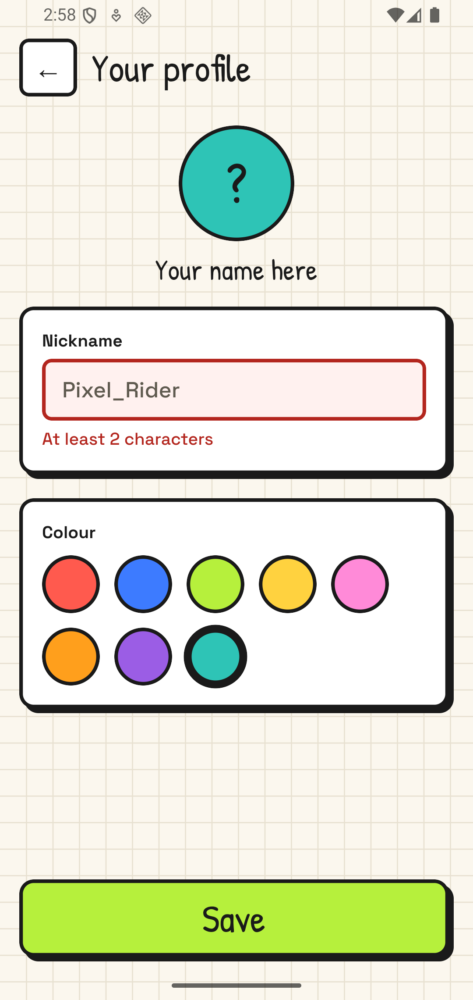
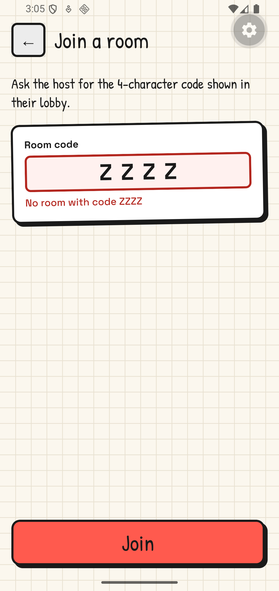
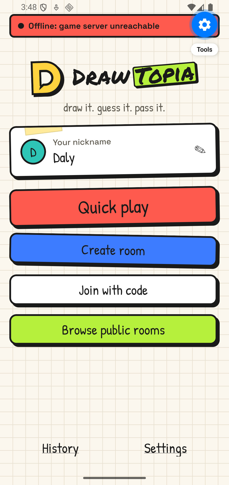
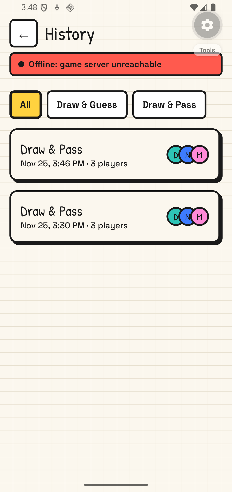
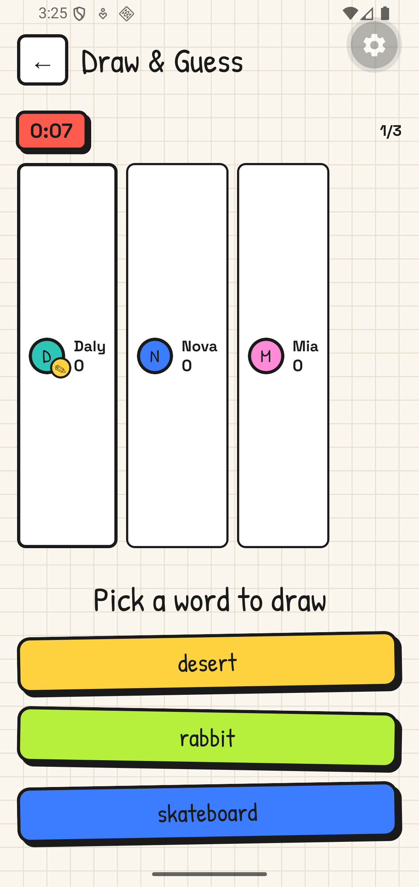
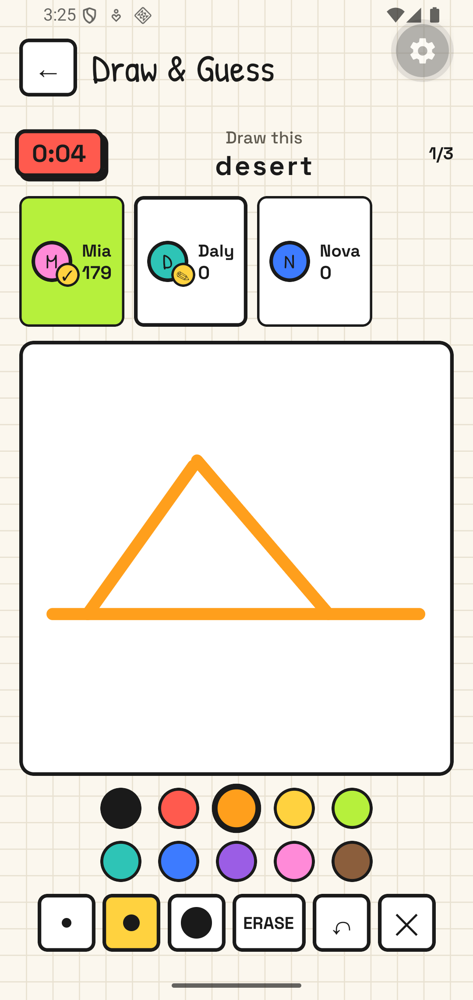
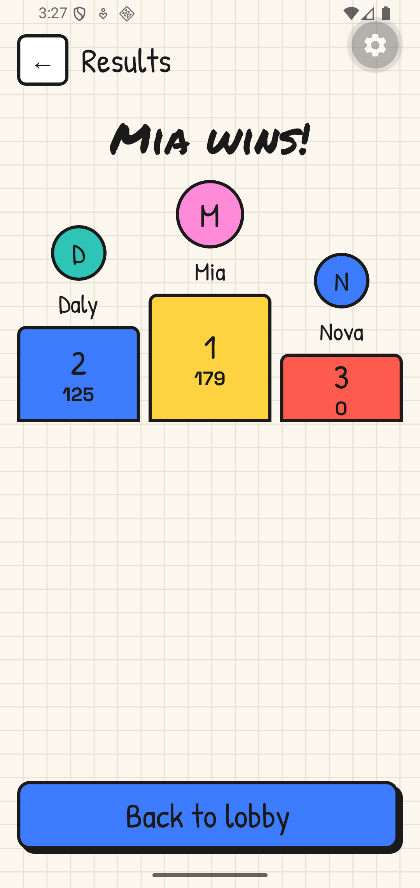
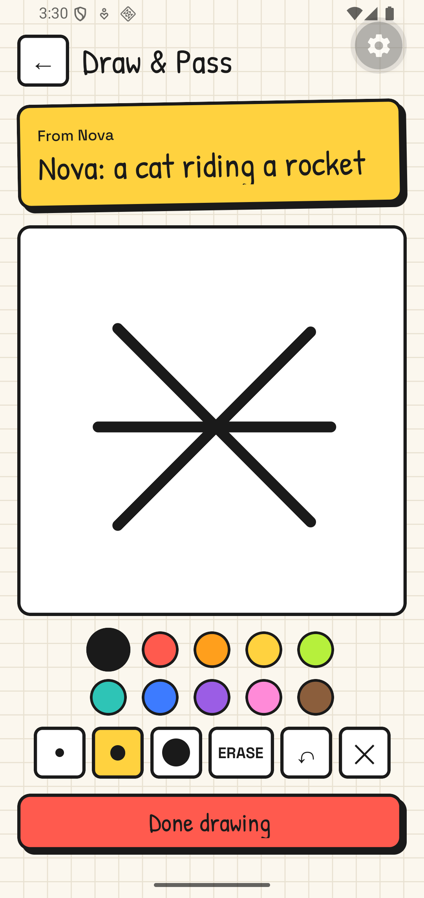
Réalisé. Les deux modes de jeu fonctionnent de bout en bout à 3 joueurs, avec salons publics et privés, réglages par l'hôte, détection des fautes proches, indices, scores, révélation des chaînes, historique hors ligne, reconnexion, et un serveur déployé (Render) utilisable en 4G. Qualité : TypeScript strict, 84 tests, intégration continue. Non réalisé / limites. Dessin transmis à la fin de chaque trait ; pas d'application publiée sur les stores ; salons en mémoire (perdus au redémarrage du serveur) ; serveur gratuit mis en veille après 15 minutes. Amélioration réaliste. Transmettre le trait en cours toutes les 50 ms (les traits sont déjà simplifiés et arrondis à 4 décimales pour limiter le volume) et persister les salons dans Redis pour survivre aux redéploiements.
Dépendances principales. Expo SDK 58, React Native 0.88, expo-router, @shopify/react-native-skia, react-native-reanimated, react-native-gesture-handler, zustand, AsyncStorage, socket.io, zod ; Vitest, ESLint, Prettier. Polices Google Fonts (licence OFL). Documentation : docs.expo.dev, socket.io, render.com/docs.
Déclaration des aides. L'assistant de programmation Claude Code (Anthropic) a été utilisé pour
proposer des options de conception, écrire le code, les tests, la documentation et un brouillon de ce rapport.
Les choix ont été faits par l'étudiant, et chaque fonctionnalité a été vérifiée par les tests automatiques et par
exécution sur l'émulateur Android (détail dans DECLARATION_SOURCES.md).